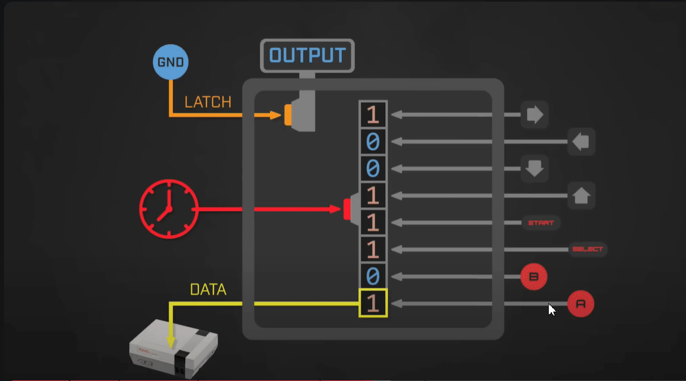
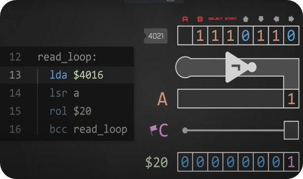
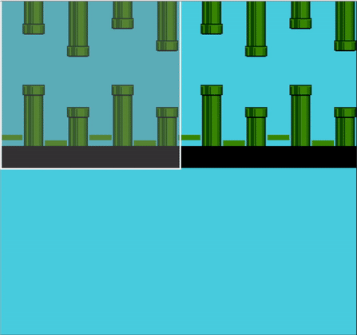
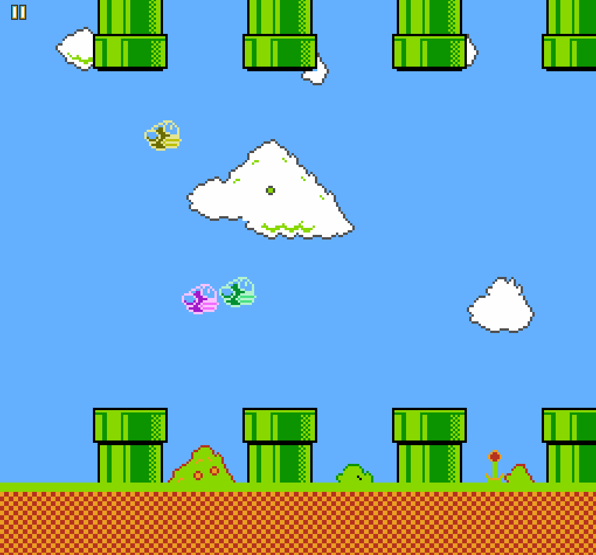
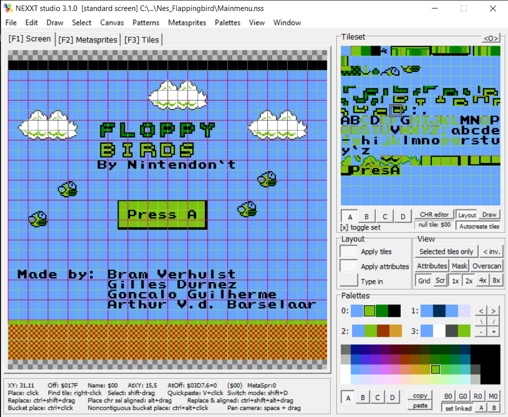
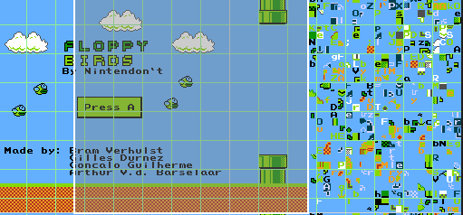

The code for this project can be found at: FloppyBirds
Foreword
For the course Retro Game Consoles at DAE, my friends and I chose to recreate the mobile game Flappy Bird, but with a small twist: we made it a 4-player experience. This page talks about the journey we took to create this game in assembly for the Nintendo NES.
We started from a base provided by the book: Classic Game Programming on the NES by Tony Cruise After reading the first chapters about how the NES works and was built, we began implementing our idea.
Reading Input & The Fourscore
Let's start with one controller. When we talk about reading controller input on the NES, we refer to the 4021 shift register. The 4021 takes in parallel input and outputs serial data, meaning it buffers the state of the controller. The controller has 8 buttons, each connected to one of the 8 inputs of the shift register. To read the state of the buttons, we first need to tell the shift register to latch the current state. We do this by writing a 1 to memory address $4016, which stores the current input state. We can then read the button states by reading from address $4016. Each read gives us one button's state, starting from the A button and ending with the Right button. After reading all 8 buttons, we tell the shift register to stop outputting data by writing a 0 to $4016. This process is shown in the gif below.
Now we buffer this input. Since we receive it bit by bit, we also store it bit by bit. We shift each input bit into our register, and once all inputs are received, we store them for later use in our program.
Now that we can read input from one controller, we need to handle four controllers. For this, we use the Fourscore, which is a multitap for the NES. The Fourscore works by multiplexing input from four controllers using four 4021 shift registers (2x2). When we latch the current state, it buffers all controller inputs. We can then read from $4016, where each read gives one button's state. After reading all buttons for one controller, the Fourscore automatically switches to the next controller. Address $4016 outputs the state for controllers 1 and 3, while address $4017 does the same for controllers 2 and 4.
Refactoring the Codebase
After implementing input reading, we took some time to refactor the codebase. The book's code mainly came in a single file that was quickly growing. Since we wanted to work on different parts simultaneously and keep the structure clean, we decided to split the project into multiple files, each handling a specific part of the game. This allowed us to collaborate without interfering with each other's work.
Gravity
Now that we could handle input, it was time to make the player move. We based movement on velocity and acceleration. When the player presses up, the velocity changes, but we also check if the player is allowed to move up based on the button’s previous state, forcing tapping instead of holding. Each frame, a constant acceleration is applied to simulate gravity, making the player fall when no input is given. To prevent falling too fast, we also apply a terminal velocity limit.

Background Scrolling Part 1
With input and player movement working, it was time to make the environment move. This is where things got more interesting. The NES has a background layer made of tiles (8x8 pixels) arranged in a 32x30 grid, giving a 256x240 pixel background. Instead of moving the player, we move the background by changing its scroll values, stored in memory addresses $2005 and $2006. As shown below, we change these scroll values each frame to create the illusion of movement. The NES can only handle two background images at once, so once one scrolls off-screen, we start overwriting it. Because of the limited hardware speed, we can only update a few tiles per frame—about two columns. This made it an interesting challenge, which we continue exploring in Background Scrolling Part 2.
Collision
It's time to start hitting things! We used a small trick to save on data and checks. To detect collisions, we aligned the map in 32-pixel groups. This means that when checking collisions on the X-axis, we only need to check one bit. When scrolling, we test whether the scroll offset is a multiple of 32 by checking with 0b00100000. This tells us when an X-axis collision is possible, so we only need to check the Y-axis ranges. To store this data, we added 8 bytes per map defining the top and bottom positions of the colliders. We assume each collider extends to the bottom of the screen. Each collider is defined by its top and bottom boundaries.
The Game Loop
Things were starting to look good, but we still needed a few important features before it felt like a real game. We needed a proper game loop. Resetting the console manually after every round was annoying, so we made the game call the reset interrupt automatically when all players died. This allowed the game to restart without any special loading logic. We also needed a way to transition from the title screen to the game, which we did when all players pressed A or player 1 pressed Start. This way, the game can be played with anywhere from 1 to 4 players.

Updating the Visuals
This is where the visuals also started to get reworked. Some code had to be adjusted for this. We made each player sprite 2x2 tiles large. Since there can be 4 players and a maximum of 8 sprites per line, we used all of them to make players more visible. We also added some background details for visual appeal. To save memory, we reused tile data while changing only the color palette. This gave us clouds and bushes with minimal extra cost. To create these visuals, we used a program called NEXXT Studio.
Audio
A game isn't complete without sound, so Bram created some quick background tunes using FamiStudio. Here's a short snippet of the result.
Background Scrolling Part 2
Before finishing, we wanted to add multiple maps (backgrounds) to make the game more replayable. For this, we had to overwrite the background during runtime, which took a while to get right. The only moment we can safely update the background is during vblank, but there's not enough time to update the whole screen, so we had to be smart and only update tiles about to come into view. We had just enough time to update two columns of tiles each frame. Managing this communication with the PPU took effort, but it worked well in the end. To switch between maps, we used pointers to the tile tables, but since addresses are 2 bytes and registers are only 1 byte, this required some careful handling. In the end, we managed to add 5 different maps that are selected randomly, except for the start screen which always loads first for a clean transition into gameplay.
Adding Score
We ran out of time near the end but still wanted to add one last feature: scoring. After all, it's fun to rub it in when you're the better player! To do this, we needed a way to keep the score after resetting the game. Normally, resetting clears the entire memory, so we added a custom reset that pushes the scores onto the stack before resetting. We simply avoid clearing the first 4 bytes of the stack so the scores stay saved. This way, when the game restarts, the last surviving player gets one point added to their score.